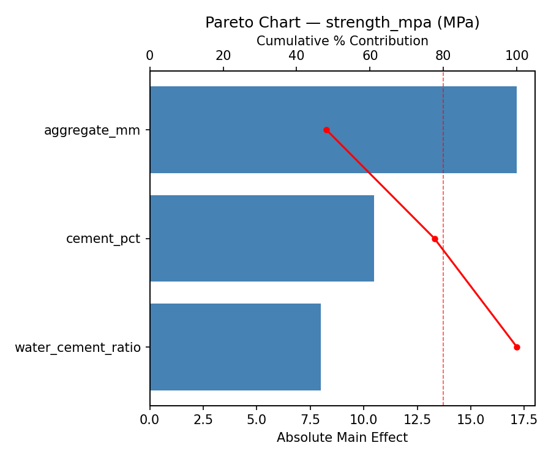
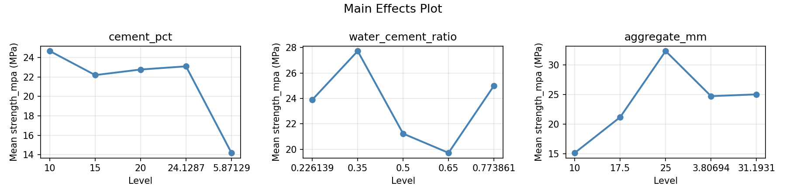
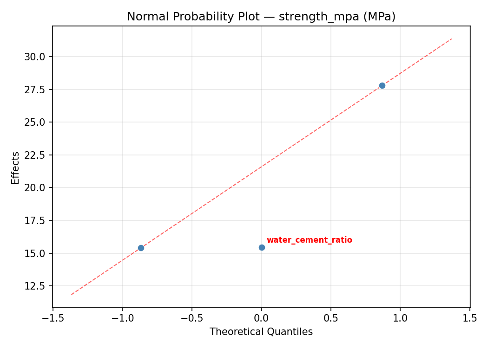
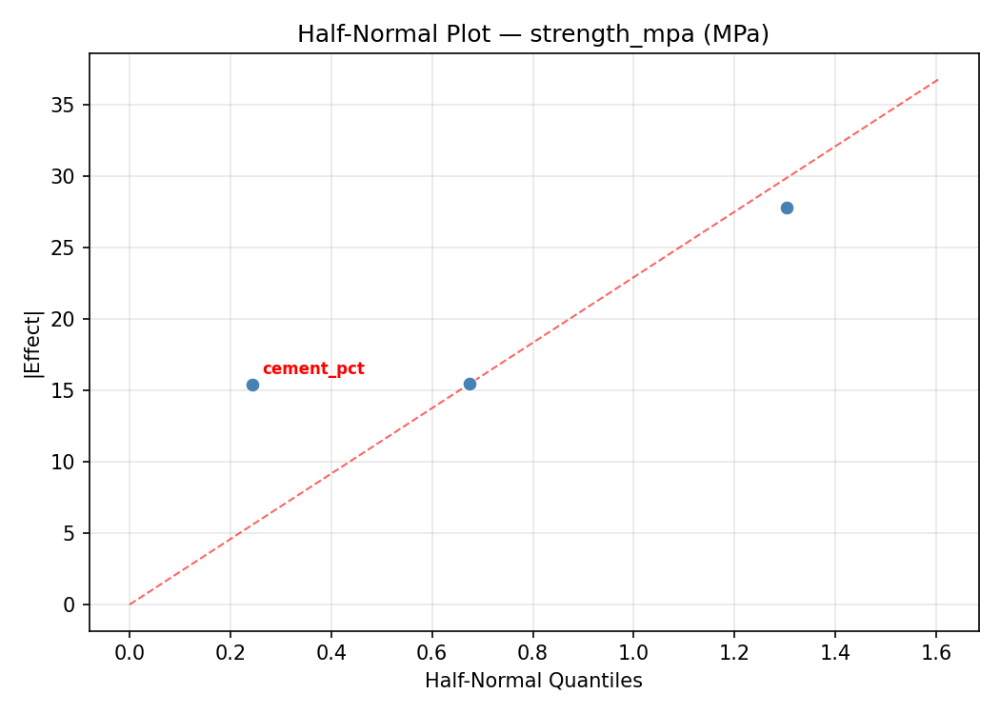
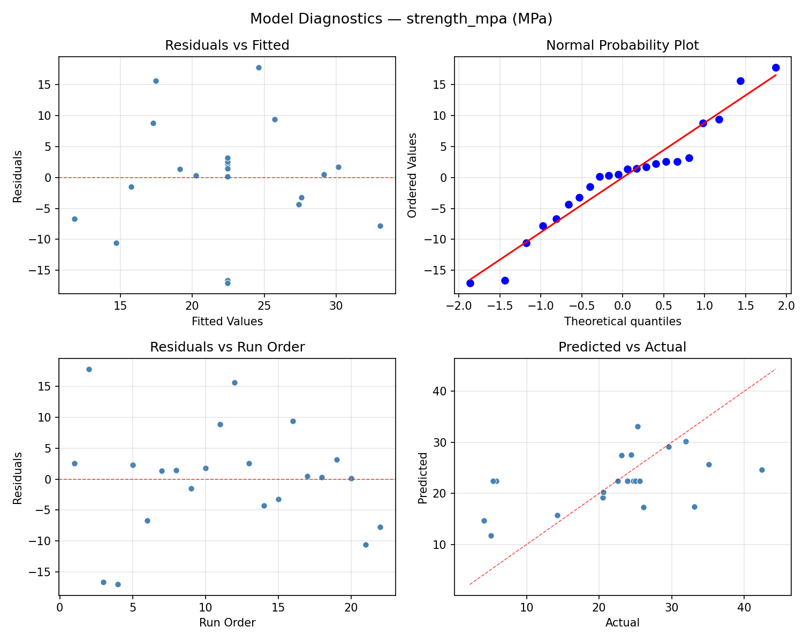
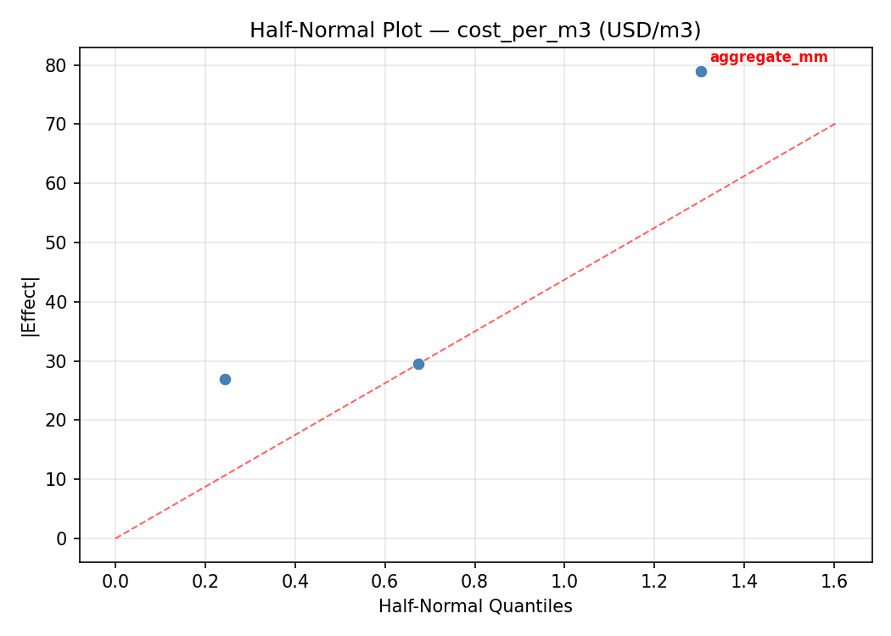
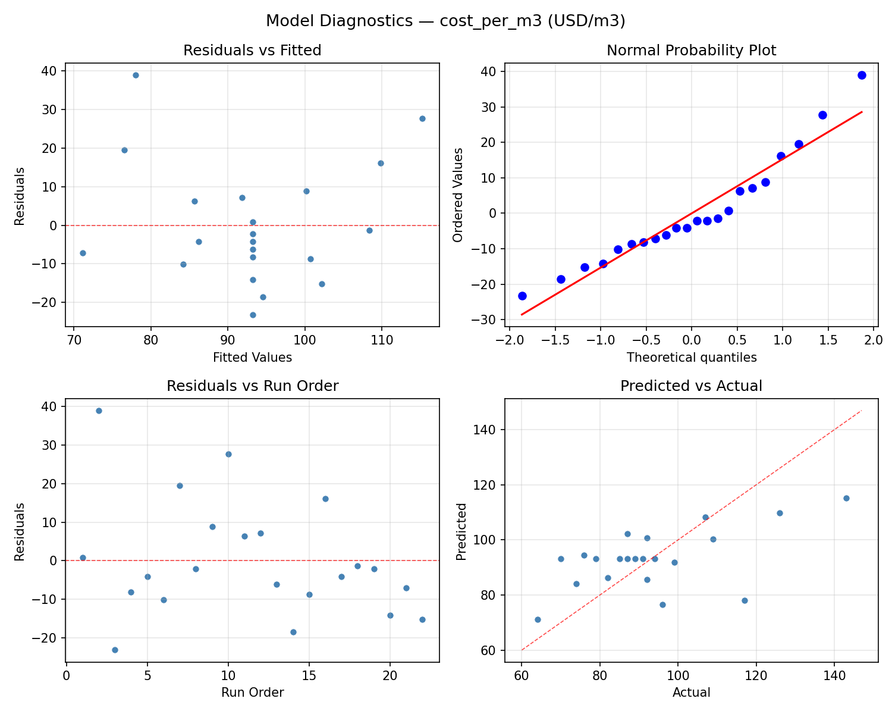
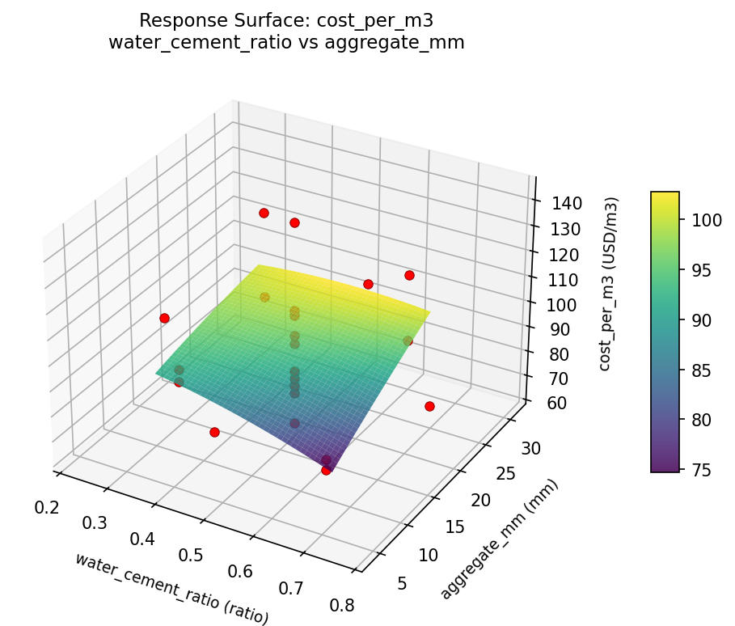

Summary
This experiment investigates diy concrete mix design. Central composite design to maximize compressive strength and minimize cost by tuning cement ratio, water-cement ratio, and aggregate size.
The design varies 3 factors: cement pct (%), ranging from 10 to 20, water cement ratio (ratio), ranging from 0.35 to 0.65, and aggregate mm (mm), ranging from 10 to 25. The goal is to optimize 2 responses: strength mpa (MPa) (maximize) and cost per m3 (USD/m3) (minimize). Fixed conditions held constant across all runs include sand type = sharp, admixture = none.
A Central Composite Design (CCD) was selected to fit a full quadratic response surface model, including curvature and interaction effects. With 3 factors this produces 22 runs including center points and axial (star) points that extend beyond the factorial range.
Quadratic response surface models were fitted to capture potential curvature and factor interactions. The RSM contour plots below visualize how pairs of factors jointly affect each response.
Key Findings
For strength mpa, the most influential factors were water cement ratio (43.7%), aggregate mm (32.5%), cement pct (23.8%). The best observed value was 42.4 (at cement pct = 15, water cement ratio = 0.5, aggregate mm = 3.80694).
For cost per m3, the most influential factors were aggregate mm (44.4%), water cement ratio (37.8%), cement pct (17.8%). The best observed value was 64.0 (at cement pct = 20, water cement ratio = 0.35, aggregate mm = 25).
Recommended Next Steps
- Run confirmation experiments at the predicted optimal settings to validate the model.
- Consider whether any fixed factors should be varied in a future study.
Experimental Setup
Factors
| Factor | Low | High | Unit |
|---|
cement_pct | 10 | 20 | % |
water_cement_ratio | 0.35 | 0.65 | ratio |
aggregate_mm | 10 | 25 | mm |
Fixed: sand_type = sharp, admixture = none
Responses
| Response | Direction | Unit |
|---|
strength_mpa | ↑ maximize | MPa |
cost_per_m3 | ↓ minimize | USD/m3 |
Configuration
{
"metadata": {
"name": "DIY Concrete Mix Design",
"description": "Central composite design to maximize compressive strength and minimize cost by tuning cement ratio, water-cement ratio, and aggregate size"
},
"factors": [
{
"name": "cement_pct",
"levels": [
"10",
"20"
],
"type": "continuous",
"unit": "%"
},
{
"name": "water_cement_ratio",
"levels": [
"0.35",
"0.65"
],
"type": "continuous",
"unit": "ratio"
},
{
"name": "aggregate_mm",
"levels": [
"10",
"25"
],
"type": "continuous",
"unit": "mm"
}
],
"fixed_factors": {
"sand_type": "sharp",
"admixture": "none"
},
"responses": [
{
"name": "strength_mpa",
"optimize": "maximize",
"unit": "MPa"
},
{
"name": "cost_per_m3",
"optimize": "minimize",
"unit": "USD/m3"
}
],
"settings": {
"operation": "central_composite",
"test_script": "use_cases/138_concrete_mix/sim.sh"
}
}
Experimental Matrix
The Central Composite Design produces 22 runs. Each row is one experiment with specific factor settings.
| Run | cement_pct | water_cement_ratio | aggregate_mm |
|---|
| 1 | 15 | 0.5 | 17.5 |
| 2 | 20 | 0.35 | 25 |
| 3 | 10 | 0.65 | 10 |
| 4 | 15 | 0.773861 | 17.5 |
| 5 | 15 | 0.5 | 17.5 |
| 6 | 5.87129 | 0.5 | 17.5 |
| 7 | 15 | 0.5 | 3.80694 |
| 8 | 15 | 0.5 | 17.5 |
| 9 | 20 | 0.65 | 10 |
| 10 | 24.1287 | 0.5 | 17.5 |
| 11 | 15 | 0.5 | 17.5 |
| 12 | 15 | 0.226139 | 17.5 |
| 13 | 15 | 0.5 | 17.5 |
| 14 | 10 | 0.35 | 25 |
| 15 | 15 | 0.5 | 17.5 |
| 16 | 20 | 0.35 | 10 |
| 17 | 15 | 0.5 | 31.1931 |
| 18 | 20 | 0.65 | 25 |
| 19 | 15 | 0.5 | 17.5 |
| 20 | 10 | 0.35 | 10 |
| 21 | 10 | 0.65 | 25 |
| 22 | 15 | 0.5 | 17.5 |
Step-by-Step Workflow
1
Preview the design
$ doe info --config use_cases/138_concrete_mix/config.json
2
Generate the runner script
$ doe generate --config use_cases/138_concrete_mix/config.json \
--output use_cases/138_concrete_mix/results/run.sh --seed 42
3
Execute the experiments
$ bash use_cases/138_concrete_mix/results/run.sh
4
Analyze results
$ doe analyze --config use_cases/138_concrete_mix/config.json
5
Get optimization recommendations
$ doe optimize --config use_cases/138_concrete_mix/config.json
6
Multi-objective optimization
With 2 competing responses, use --multi to find the best compromise via Derringer–Suich desirability.
$ doe optimize --config use_cases/138_concrete_mix/config.json --multi
7
Generate the HTML report
$ doe report --config use_cases/138_concrete_mix/config.json \
--output use_cases/138_concrete_mix/results/report.html
Features Exercised
| Feature | Value |
|---|
| Design type | central_composite |
| Factor types | continuous (all 3) |
| Arg style | double-dash |
| Responses | 2 (strength_mpa ↑, cost_per_m3 ↓) |
| Total runs | 22 |
Analysis Results
Generated from actual experiment runs using the DOE Helper Tool.
Response: strength_mpa
Top factors: water_cement_ratio (43.7%), aggregate_mm (32.5%), cement_pct (23.8%).
ANOVA
| Source | DF | SS | MS | F | p-value |
|---|
| Source | DF | SS | MS | F | p-value |
| cement_pct | 4 | 424.5252 | 106.1313 | 1.240 | 0.3604 |
| water_cement_ratio | 4 | 624.9836 | 156.2459 | 1.826 | 0.2081 |
| aggregate_mm | 4 | 459.8652 | 114.9663 | 1.343 | 0.3263 |
| Lack | of | Fit | 2 | 40.1650 | 20.0825 |
| Pure | Error | 7 | 599.0687 | | |
| Error | 9 | 639.2337 | 85.5812 | | |
| Total | 21 | 2148.6077 | 102.3147 | | |
Pareto Chart

Main Effects Plot

Normal Probability Plot of Effects

Half-Normal Plot of Effects

Model Diagnostics

Response: cost_per_m3
Top factors: aggregate_mm (44.4%), water_cement_ratio (37.8%), cement_pct (17.8%).
ANOVA
| Source | DF | SS | MS | F | p-value |
|---|
| Source | DF | SS | MS | F | p-value |
| cement_pct | 4 | 794.8561 | 198.7140 | 0.297 | 0.8728 |
| water_cement_ratio | 4 | 1160.1061 | 290.0265 | 0.433 | 0.7817 |
| aggregate_mm | 4 | 1460.3561 | 365.0890 | 0.545 | 0.7072 |
| Lack | of | Fit | 2 | 0.0000 | 0.0000 |
| Pure | Error | 7 | 4686.0000 | | |
| Error | 9 | 3745.9545 | 669.4286 | | |
| Total | 21 | 7161.2727 | 341.0130 | | |
Pareto Chart

Main Effects Plot

Normal Probability Plot of Effects

Half-Normal Plot of Effects

Model Diagnostics

Response Surface Plots
3D surfaces fitted with quadratic RSM. Red dots are observed data points.
cost per m3 cement pct vs aggregate mm

cost per m3 cement pct vs water cement ratio

cost per m3 water cement ratio vs aggregate mm

strength mpa cement pct vs aggregate mm

strength mpa cement pct vs water cement ratio

strength mpa water cement ratio vs aggregate mm

Multi-Objective Optimization
When responses compete, Derringer–Suich desirability finds the best compromise.
Each response is scaled to a 0–1 desirability, then combined via a weighted geometric mean.
Overall Desirability
D = 0.6878
Per-Response Desirability
| Response | Weight | Desirability | Predicted | Dir |
|---|
strength_mpa |
1.5 |
|
29.60 0.6507 29.60 MPa |
↑ |
cost_per_m3 |
1.0 |
|
82.00 0.7474 82.00 USD/m3 |
↓ |
Recommended Settings
| Factor | Value |
|---|
cement_pct | 5.87129 % |
water_cement_ratio | 0.5 ratio |
aggregate_mm | 17.5 mm |
Source: from observed run #17
Trade-off Summary
Sacrifice = how much worse than single-objective best.
| Response | Predicted | Best Observed | Sacrifice |
|---|
cost_per_m3 | 82.00 | 64.00 | +18.00 |
Top 3 Runs by Desirability
| Run | D | Factor Settings |
|---|
| #12 | 0.6547 | cement_pct=15, water_cement_ratio=0.5, aggregate_mm=31.1931 |
| #2 | 0.6351 | cement_pct=15, water_cement_ratio=0.5, aggregate_mm=17.5 |
Model Quality
| Response | R² | Type |
|---|
cost_per_m3 | 0.0753 | linear |
Full Multi-Objective Output
============================================================
MULTI-OBJECTIVE OPTIMIZATION
Method: Derringer-Suich Desirability Function
============================================================
Overall desirability: D = 0.6878
Response Weight Desirability Predicted Direction
---------------------------------------------------------------------
strength_mpa 1.5 0.6507 29.60 MPa ↑
cost_per_m3 1.0 0.7474 82.00 USD/m3 ↓
Recommended settings:
cement_pct = 5.87129 %
water_cement_ratio = 0.5 ratio
aggregate_mm = 17.5 mm
(from observed run #17)
Trade-off summary:
strength_mpa: 29.60 (best observed: 42.40, sacrifice: +12.80)
cost_per_m3: 82.00 (best observed: 64.00, sacrifice: +18.00)
Model quality:
strength_mpa: R² = 0.0536 (linear)
cost_per_m3: R² = 0.0753 (linear)
Top 3 observed runs by overall desirability:
1. Run #17 (D=0.6878): cement_pct=5.87129, water_cement_ratio=0.5, aggregate_mm=17.5
2. Run #12 (D=0.6547): cement_pct=15, water_cement_ratio=0.5, aggregate_mm=31.1931
3. Run #2 (D=0.6351): cement_pct=15, water_cement_ratio=0.5, aggregate_mm=17.5
Full Analysis Output
=== Main Effects: strength_mpa ===
Factor Effect Std Error % Contribution
--------------------------------------------------------------
water_cement_ratio 26.1250 2.1565 43.7%
aggregate_mm 19.4250 2.1565 32.5%
cement_pct 14.2000 2.1565 23.8%
=== ANOVA Table: strength_mpa ===
Source DF SS MS F p-value
-----------------------------------------------------------------------------
cement_pct 4 424.5252 106.1313 1.240 0.3604
water_cement_ratio 4 624.9836 156.2459 1.826 0.2081
aggregate_mm 4 459.8652 114.9663 1.343 0.3263
Lack of Fit 2 40.1650 20.0825 0.235 0.7968
Pure Error 7 599.0687 85.5812
Error 9 639.2337 85.5812
Total 21 2148.6077 102.3147
=== Summary Statistics: strength_mpa ===
cement_pct:
Level N Mean Std Min Max
------------------------------------------------------------
10 4 28.4500 3.6683 25.0000 33.1000
15 12 22.7750 11.1144 4.1000 42.4000
20 4 14.2500 10.4066 5.1000 23.9000
24.1287 1 24.4000 0.0000 24.4000 24.4000
5.87129 1 25.0000 0.0000 25.0000 25.0000
water_cement_ratio:
Level N Mean Std Min Max
------------------------------------------------------------
0.226139 1 20.6000 0.0000 20.6000 20.6000
0.35 4 16.2750 12.8689 5.1000 29.6000
0.5 12 21.6417 9.3475 4.1000 35.1000
0.65 4 26.4250 4.6786 22.6000 33.1000
0.773861 1 42.4000 0.0000 42.4000 42.4000
aggregate_mm:
Level N Mean Std Min Max
------------------------------------------------------------
10 4 20.1000 9.8411 5.4000 26.1000
17.5 12 25.2250 9.2082 4.1000 42.4000
25 4 22.6000 12.4566 5.1000 33.1000
3.80694 1 14.2000 0.0000 14.2000 14.2000
31.1931 1 5.8000 0.0000 5.8000 5.8000
=== Main Effects: cost_per_m3 ===
Factor Effect Std Error % Contribution
--------------------------------------------------------------
aggregate_mm 39.0000 3.9371 44.4%
water_cement_ratio 33.2500 3.9371 37.8%
cement_pct 15.6667 3.9371 17.8%
=== ANOVA Table: cost_per_m3 ===
Source DF SS MS F p-value
-----------------------------------------------------------------------------
cement_pct 4 794.8561 198.7140 0.297 0.8728
water_cement_ratio 4 1160.1061 290.0265 0.433 0.7817
aggregate_mm 4 1460.3561 365.0890 0.545 0.7072
Lack of Fit 2 0.0000 0.0000 0.000 1.0000
Pure Error 7 4686.0000 669.4286
Error 9 3745.9545 669.4286
Total 21 7161.2727 341.0130
=== Summary Statistics: cost_per_m3 ===
cement_pct:
Level N Mean Std Min Max
------------------------------------------------------------
10 4 91.7500 7.1356 82.0000 99.0000
15 12 97.9167 23.4539 64.0000 143.0000
20 4 82.2500 7.3655 74.0000 91.0000
24.1287 1 92.0000 0.0000 92.0000 92.0000
5.87129 1 87.0000 0.0000 87.0000 87.0000
water_cement_ratio:
Level N Mean Std Min Max
------------------------------------------------------------
0.226139 1 107.0000 0.0000 107.0000 107.0000
0.35 4 83.7500 8.2614 74.0000 94.0000
0.5 12 94.1667 22.5422 64.0000 143.0000
0.65 4 90.2500 8.3016 79.0000 99.0000
0.773861 1 117.0000 0.0000 117.0000 117.0000
aggregate_mm:
Level N Mean Std Min Max
------------------------------------------------------------
10 4 90.5000 3.8730 85.0000 94.0000
17.5 12 97.9167 21.9564 64.0000 143.0000
25 4 83.5000 10.8474 74.0000 99.0000
3.80694 1 109.0000 0.0000 109.0000 109.0000
31.1931 1 70.0000 0.0000 70.0000 70.0000
Optimization Recommendations
=== Optimization: strength_mpa ===
Direction: maximize
Best observed run: #2
cement_pct = 15
water_cement_ratio = 0.5
aggregate_mm = 3.80694
Value: 42.4
RSM Model (linear, R² = 0.3592, Adj R² = 0.2524):
Coefficients:
intercept +22.4318
cement_pct +0.7443
water_cement_ratio +4.7661
aggregate_mm -5.4177
RSM Model (quadratic, R² = 0.6188, Adj R² = 0.3330):
Coefficients:
intercept +23.5805
cement_pct +0.7443
water_cement_ratio +4.7661
aggregate_mm -5.4177
cement_pct*water_cement_ratio +1.2875
cement_pct*aggregate_mm -0.4375
water_cement_ratio*aggregate_mm +3.8125
cement_pct^2 -0.5593
water_cement_ratio^2 -3.6193
aggregate_mm^2 +2.4557
Curvature analysis:
water_cement_ratio coef=-3.6193 concave (has a maximum)
aggregate_mm coef=+2.4557 convex (has a minimum)
cement_pct coef=-0.5593 concave (has a maximum)
Notable interactions:
water_cement_ratio*aggregate_mm coef=+3.8125 (synergistic)
cement_pct*water_cement_ratio coef=+1.2875 (synergistic)
cement_pct*aggregate_mm coef=-0.4375 (antagonistic)
Predicted optimum (from quadratic model, at observed points):
cement_pct = 15
water_cement_ratio = 0.5
aggregate_mm = 3.80694
Predicted value: 41.6574
Surface optimum (via L-BFGS-B, quadratic model):
cement_pct = 20
water_cement_ratio = 0.54644
aggregate_mm = 10
Predicted value: 32.4233
Model quality: Moderate fit — use predictions directionally, not precisely.
Factor importance:
1. aggregate_mm (effect: 28.8, contribution: 52.0%)
2. water_cement_ratio (effect: 20.2, contribution: 36.5%)
3. cement_pct (effect: 6.4, contribution: 11.5%)
=== Optimization: cost_per_m3 ===
Direction: minimize
Best observed run: #21
cement_pct = 20
water_cement_ratio = 0.35
aggregate_mm = 25
Value: 64.0
RSM Model (linear, R² = 0.0727, Adj R² = -0.0819):
Coefficients:
intercept +93.1818
cement_pct -0.5398
water_cement_ratio +2.3895
aggregate_mm -5.4302
RSM Model (quadratic, R² = 0.4570, Adj R² = 0.0498):
Coefficients:
intercept +104.4450
cement_pct -0.5398
water_cement_ratio +2.3895
aggregate_mm -5.4302
cement_pct*water_cement_ratio -0.2500
cement_pct*aggregate_mm +0.7500
water_cement_ratio*aggregate_mm +7.5000
cement_pct^2 -7.9816
water_cement_ratio^2 -7.8316
aggregate_mm^2 -1.0816
Curvature analysis:
cement_pct coef=-7.9816 concave (has a maximum)
water_cement_ratio coef=-7.8316 concave (has a maximum)
aggregate_mm coef=-1.0816 concave (has a maximum)
Notable interactions:
water_cement_ratio*aggregate_mm coef=+7.5000 (synergistic)
cement_pct*aggregate_mm coef=+0.7500 (synergistic)
Predicted optimum (from quadratic model, at observed points):
cement_pct = 15
water_cement_ratio = 0.5
aggregate_mm = 3.80694
Predicted value: 110.7540
Surface optimum (via L-BFGS-B, quadratic model):
cement_pct = 10
water_cement_ratio = 0.35
aggregate_mm = 25
Predicted value: 71.7703
Model quality: Weak fit — consider adding center points or using a different design.
Factor importance:
1. aggregate_mm (effect: 36.8, contribution: 43.9%)
2. cement_pct (effect: 24.9, contribution: 29.8%)
3. water_cement_ratio (effect: 22.1, contribution: 26.4%)